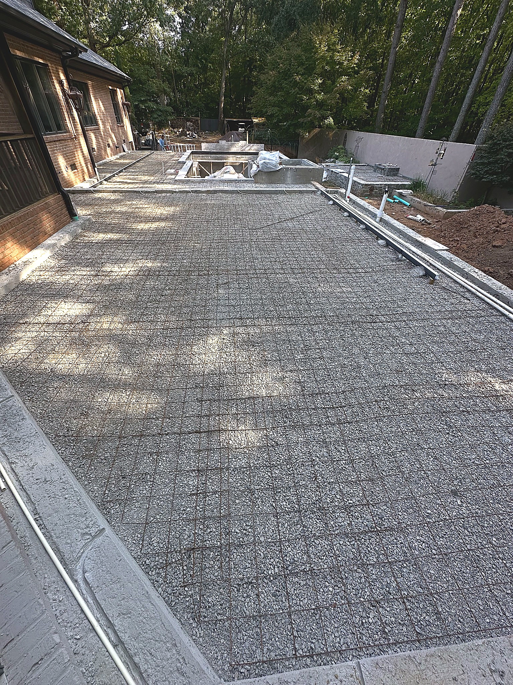

Travertine pool decks
Cool, timeless surfaces designed for comfort, durability, and a polished finish.
Hardscapes & structural landscape
Our hardscape work brings structure, texture, and character to outdoor spaces—from natural stone and travertine to custom paver installations.
Explore your options →Built around the pool
We create durable, beautiful transitions between your home, pool, and landscape with the craftsmanship to make every edge feel intentional.

Cool, timeless surfaces designed for comfort, durability, and a polished finish.

Pattern, color, and scale selected to complement your architecture and outdoor life.
Retaining walls, raised planters, steps, coping, fire pit areas, and decorative stone.
Materials we work with
Make the whole property feel finished